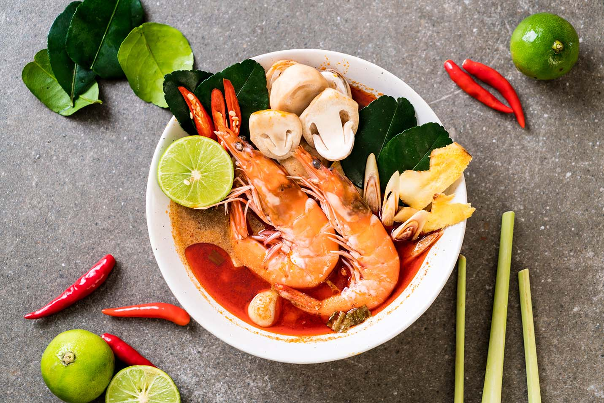
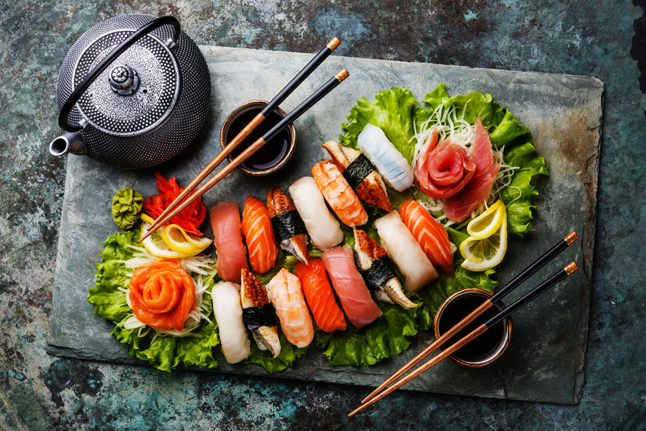

Азиатская кухня представляет собой обобщающее понятие, которое включает в себя кухню японскую, китайскую, вьетнамскую, корейскую, тайскую, малазийскую и филиппинскую.
Безусловно, каждая из выше перечисленных национальных кухонь имеет свою специфику, но есть и некоторые общие черты, которые позволяют объединить все эти столь разнообразные кулинарные традиции в целостное понятие, которое именуется азиатской кухней.
Прежде всего, следует отметить, что все блюда азиатской кухней являются ароматными, пряными, вкусными, но в то же время удивительно легкими.
Европейцам и американцам, сравнительно недавно познакомившимся с древними азиатскими традициями, очень полюбились рецепты азиатской кухни, которая действительно никого не может оставить равнодушным.
Главной и ключевой особенностью азиатской кухни является огромное количество блюд из риса.
Рис в рецептах азиатской кухни занимает столь же почетное место, сколько и картофель для европейцев.
Азиаты практически не представляют себе трапезу, которая могла бы обойтись без риса.
Но и здесь у каждой национальной кухни существуют свои особенности. Например, в Японии предпочитают круглый рис, а в Тайланде – липкий длинный рис жасмин, в Индии широко распространен сорт длиннозернового риса – басмати.
.jpg)


.jpg)